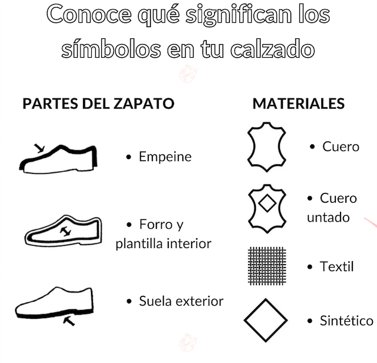

¿Por que decidimos crear una marca vegana?

Antes que nada, ¿que significa que nuestro calzado sea vegano?
Un producto vegano es aquel que no contiene elemento de origen animal ni sus derivados. Y es que el veganismo va más de allá de la alimentación, se trata de reducir el uso de cualquier cosa que incluya productos de origen animal, y pues sí, eso incluye el calzado que usamos cada día.
Desde nuestra marca, buscamos expresar y comunicar la concientizacion sobre el consumo de calzado ecologico y que sea menor el consumo de cuero vacuno.
Como saber si un zapato es vegano?
Les queremos mostrar cuales son las principales partes de un zapato y cuales son los materiales con los que se producen.
- Capellada y forreria
La capellada es la parte exterior y la forreria es la parte interior de un zapato. La mayoria de los calzados usan cueros vacunos, ovinos y porcinos para hacer estar partes. En nuestra marca usamos textiles y laminados sinteticos que imitan la estetica de los cueros.
- Platilla de armado
Esta pieza clave es sobre la que se pega y arma todo el calzado. Antiguamente se usaba siempre vaqueta(cuero vacuno curtido vegetal) pero actualmente en la industria esta mascificado el uso de platilla de carton especial para el calzado. Obviamente nosotros utilizamos las de carton.
- Suela y taco
En el rubro llamamos suela solo a las hechas de cuero vacuno. Todo lo demas, es decir, las suelas de goma plasticas o industriales, son libres de cuero y aptas vegan.
- Pegamentos
En la actualidad, los pegamentos utilizados son quimicos, sinteticos y muy especiales. Cuando utilizas materiales de capellada y fondos sinteticos debes usar pegamentos compuestos por los mismos materiales que queres pegar, si no, no se pegan. Es por eso que en nuestra marca se utilizan pegamentos sinteticos.